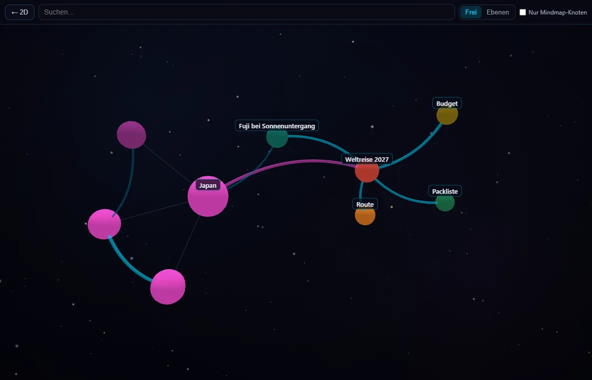
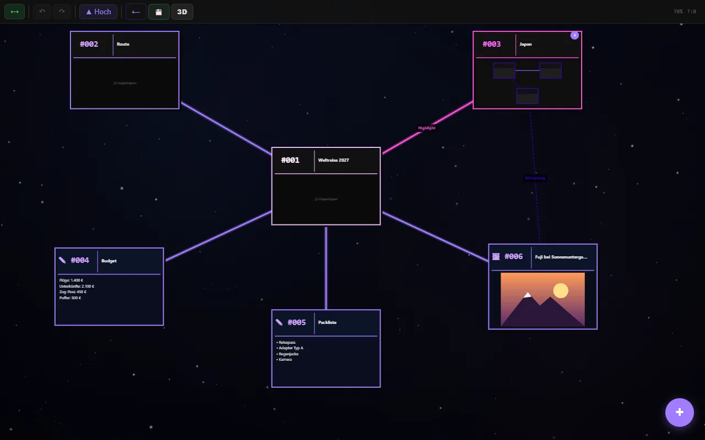
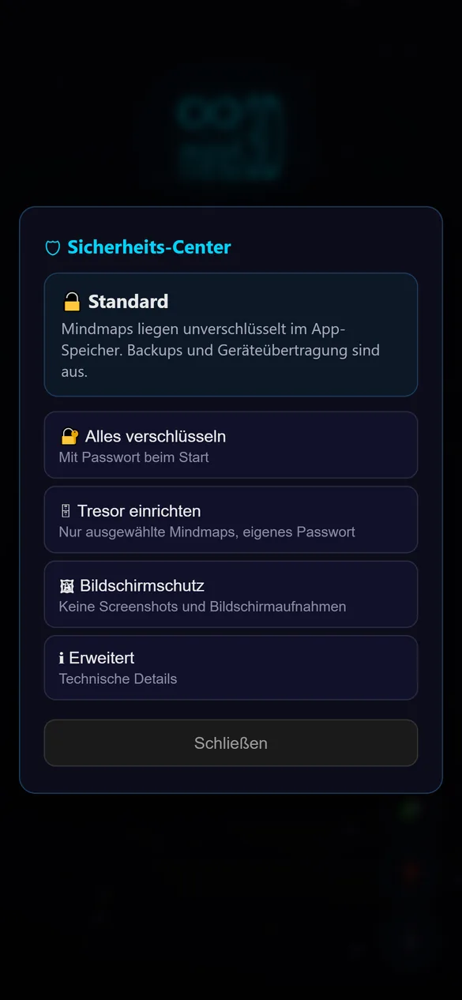

Mitgelieferte Plugins
Plugins erweitern mind3D um neue Ansichten, Farben und Werkzeuge. Fünf sind schon dabei. Du schaltest sie im Startbildschirm unter 🧩 ein und aus, ohne Neustart.
Die ganze Mindmap als Raum
In der Mindmap erscheint oben der Knopf 3D. Er zeigt alle Ebenen gleichzeitig als Raum aus Kugeln und Fäden. Bereiche mit vielen Unterknoten sind größer, die Farben kommen aus deiner Mindmap.
- Drehen, zoomen und verschieben mit Finger oder Maus
- Suchen: Die Ansicht fliegt zum gefundenen Knoten
- Knoten antippen und „In 2D öffnen“ springt genau dorthin
- Zwei Anordnungen: Frei (Gruppen nach Hauptästen) oder Ebenen (Tiefe = Abstand zur Mitte)
- Filter „Nur Mindmap-Knoten“ für den groben Überblick
- Zurück-Taste oder Esc schließt die 3D-Ansicht
Einstellungen: Anordnung beim Öffnen, FPS-Anzeige

mind3D in deiner Farbe
Ändert die Akzentfarbe der ganzen App: Knöpfe, Logo, Knoten und Verbindungen. Das Bild zeigt dieselbe Mindmap in Violett.
- Zehn fertige Farben: Cyan, Blau, Violett, Magenta, Rot, Orange, Gold, Grün, Türkis, Weiß
- Eigene Farbe über einen Hex-Wert, z. B. #ff7a59
- Farbverlauf aus zwei Farben, auch im Logo
- Die Farbe wechselt sofort, ohne Neustart

Aus Mindmaps werden Projekte
Für alle, die mit mind3D planen. Das Plugin fügt der Projektliste einen Tab Projekte hinzu. Jede Mindmap kannst du dort zum Projekt machen.
- Übersicht: offene und erledigte Aufgaben auf einen Blick
- Projektstrukturplan: Unterprojekte und Arbeitspakete aus deiner Mindmap
- To-Do-Liste mit „Als nächstes“ und einem Bereich für Erledigtes
- Projekt-Mindmaps sind in der Liste markiert
Gartenplanung
So sieht ein Projekt als Mindmap aus. Auch ohne Plugin bleibt alles verständlich:
- Hochbeete (Unterprojekt)
- Bewässerung (Arbeitspaket)
- 📋 To-Do: offene Aufgaben
- ✅ Fertig: erledigte Aufgaben
Notizen und Obsidian-Vaults übernehmen
Im Dialog „Neues Projekt“ kommen neue Import-Wege dazu. Aus vorhandenen Notizen wird so eine Mindmap.
Eine Notiz (.md)
Überschriften werden zu Ebenen, Absätze und Listenpunkte zu Knoten, Aufgaben (☐/☑) bleiben als Aufgabenliste erhalten. Eine Notiz ohne Überschriften wird ein einzelner Text-Knoten.
Ganzer Vault
Als .zip, am PC auch direkt als Ordner. Ordner werden Ebenen, Notizen Knoten, [[Wikilinks]] Verbindungen. Eingebettete Bilder kommen mit.
Farben nach Tags
Notizen können nach ihrem ersten Tag eingefärbt werden. Eigene Farben pro Tag lassen sich festlegen.
Der Import ändert deine Originaldateien nicht. Ein erneuter Import legt ein neues Projekt an, z. B. „Mein Vault (1)“.

Alle Schutzfunktionen an einem Ort
Ist von Anfang an eingeschaltet und erscheint als 🛡 im Startbildschirm. Ohne dein Zutun ändert sich nichts.
- Alles verschlüsseln oder einen Tresor mit eigenem Passwort einrichten
- 24 Wiederherstellungswörter als Ersatzschlüssel
- Passwort ändern, automatisches Sperren einstellen
- App-Sperre per Fingerabdruck und Bildschirmschutz
Die Verschlüsselung selbst steckt im Kern der App. Schaltest du das Plugin aus, bleibt alles verschlüsselt und lesbar; nur die Schalter verschwinden.
Ausführlich auf der Seite Sicherheit →Eigene Plugins
🧩Installieren
Startbildschirm → 🧩 → „Plugin aus Datei installieren“ und die .js-Datei wählen. Dieselbe Datei erneut installieren aktualisiert das Plugin.
Wichtig: Ein installiertes Plugin kann deine Mindmaps lesen und ändern. Installiere nur Plugins, deren Herkunft du vertraust.
🛠Selbst entwickeln
Plugins sind einzelne JavaScript-Dateien. Sie können Farben und Hintergrund ändern, Knotentypen und Knöpfe ergänzen, eigene Tabs und Import-Formate anlegen sowie Mindmaps lesen und schreiben, immer über die normale Speicherlogik der App.
Ins Internet kommen Plugins nicht: Die App blockiert jede Verbindung nach außen.
Anleitung und API